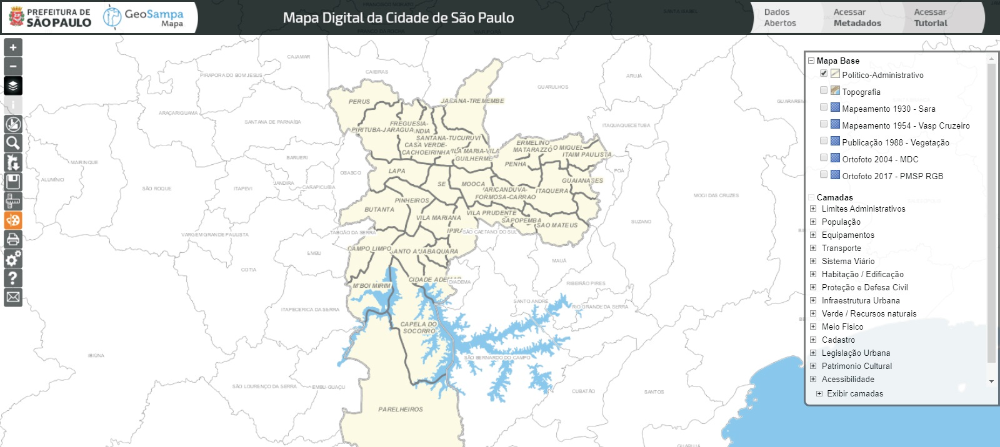

GeoSampa tutorial internet

Bem-vindo ao GeoSampa!

Este tutorial auxilia no uso das ferramentas disponíveis e na navegação pelos mapas e camadas de dados do GeoSampa.
http://geosampa.prefeitura.sp.gov.br/

Orientações gerais
Verifique se seu navegador atende os requisitos da página inicial:
Esta aplicação é compatível com os browsers Google Chrome, Firefox, Internet Explorer e Safari.
Recomenda-se o uso das seguintes versões:
Internet Explorer: 9 ou superior.
Safari: 5 ou superior.
Google Chrome: 34 ou superior.
Firefox: 28 ou superior.
Microsoft Edge: versão 25 ou superior.
Você poderá consultar essa orientação sempre que quiser clicando no botão
 .
.
Os computadores que possuem a versão antiga do navegador Internet Explorer não são compatíveis com esta aplicação.
Caso não seja possível atualizá-la, recomendamos a instalação de outro navegador nas versões indicadas.
Verifique se seu bloqueador de “pop-up” está desativado. Caso contrário, alguns downloads podem ser bloqueados.
Para evitar possíveis erros, sugerimos realizar periodicamente a
limpeza do cache do seu navegador. Para isso, basta acionar o atalho Ctrl + Alt + Del.
| Datum | Projeção | EPSG* |
| SAD69(96) | UTM 23 S | 5533 |
| SIRGAS 2000 | UTM 23 S | 31983 |
| SAD69(96) | Geográfica | 5527 |
| SIRGAS 2000 | Geográfica | 4674 |
| WGS84 | UTM 23 S | 32723 |
* Grupo Europeu de Pesquisa Petrolífera (European Petroleum Survey Group)
| Tipo do serviço | Link |
| WMS - Camadas | http://wms.geosampa.prefeitura.sp.gov.br/geoserver/geoportal/wms |
| WMS - Mapas Base | http://raster.geosampa.prefeitura.sp.gov.br/geoserver/geoportal/wms |
| WFS - Camadas | http://wfs.geosampa.prefeitura.sp.gov.br/geoserver/geoportal/wfs |
Mapa Digital da Cidade
Esta é a 1ª tela do mapa. A seguir, serão descritas as alternativas de navegação e ferramentas disponíveis.

Metadados
Os Metadados são as informações sobre cada uma das camadas, com o objetivos de proporcionar a correta utilização e
interpretação dos dados.
Ao clicar no botão Metadados, localizado no canto superior direito, abrirá um arquivo com diversas planilhas
(abas):
Consulta aos metadados: Planilha para consulta de metadados das camadas, sistemas e downloads.
Lista de metadados: Listagem de camadas, sistemas e downloads disponíveis, que está vinculada à 1ª planilha.
Estrutura: Camadas, sistemas e downloads, organizados conforme aparecem na janela de controle de camadas.

Menu de conteúdos/camadas
Você poderá escolher um dos mapas disponíveis como plano de fundo. O mapa base poderá ser alterado a qualquer
momento durante sua navegação. Só é possível visualizar um por vez. Pode-se deixar sem plano de fundo.
As informações de cada camada estão disponíveis no botão de metadados. O botão metadados esta localizado na parte
superior direita, conforme imagemna página anterior.
Aqui está o conteúdo do mapa com as informações georreferenciadas de várias secretarias e órgãos públicos.
As camadas estão organizadas em grupos temáticos. Você poderá abrir o grupo clicando no botão
 e habilitar a camada de interesse.
Caso queira habilitar todas as camadas do grupo, poderá clicar apenas uma vez neste.
Todas as camadas serão habilitadas automaticamente.
e habilitar a camada de interesse.
Caso queira habilitar todas as camadas do grupo, poderá clicar apenas uma vez neste.
Todas as camadas serão habilitadas automaticamente.

Menu de conteúdos/camadas
Etiqueta de rótulo: clique para que os rótulos das camadas selecionadas apareçam no mapa.
Dica: posicionando o cursor do mouse sobre o nome da camada, você poderá ver um resumo do seu conteúdo.
Algumas camadas contam com legendas. Clique no ícone colorido para visualizá-las.


Ferramentas
O cursor assume diferentes formas dependendo da sua função:
-
 seta = escolher funcionalidades (botões, camadas etc) e navegação pelo mapa.
seta = escolher funcionalidades (botões, camadas etc) e navegação pelo mapa.
-
 mira = requer um ponto ou uma área para pesquisa no mapa.
mira = requer um ponto ou uma área para pesquisa no mapa.
-
 dedo = seleção dentro de uma caixa de diálogo ou janela.
dedo = seleção dentro de uma caixa de diálogo ou janela.
-
 quadrado = aparece paramedir distância, área e ângulo (não há aderência / atração / ímã);
a precisão é limitada pela escala.
quadrado = aparece paramedir distância, área e ângulo (não há aderência / atração / ímã);
a precisão é limitada pela escala.
-
 cruz = arrasta caixa de diálogo/janela.
cruz = arrasta caixa de diálogo/janela.
-
 cursor de texto = requer preenchimento de um campo.
cursor de texto = requer preenchimento de um campo.
Ferramentas
O menu de ferramentas contém os seguintes botões:
 Zoom mais / Zoom menos: aproxima ou afasta.
Ao alterar o zoom, escala, localizada na extremidade inferior esquerda do mapa, também é alterada.
É possível definir a escala numérica desejada digitando-a diretamente no campo "escala".
Zoom mais / Zoom menos: aproxima ou afasta.
Ao alterar o zoom, escala, localizada na extremidade inferior esquerda do mapa, também é alterada.
É possível definir a escala numérica desejada digitando-a diretamente no campo "escala".

Quanto maior a escala, mais detalhada a imagem: 1:500 mais detalhe, 1:800.000 menos detalhe, por exemplo.
Cada camada possui um limite de visualização adequado à sua legibilidade.
Caso necessário, deve-se aumentar a escala até que a camada fique habilitada, pois só é possível ligar à camada
se o zoom for adequado a sua visualização.
Por exemplo, a camada “Lote” só pode ser visualizada em escala a baixo de 1:5000 (exclusive).
 Controle de camadas:
exibe/oculta o controle de camadas.
Controle de camadas:
exibe/oculta o controle de camadas.
 Informação:
apresenta resumo dos atributos da(s) feição(ões) da(s) camada(s) escolhida(s), desde que ligada(s) e visível(is).
Para isso, posicionar e clicar com a mira no local da(s) feição(ões) de interesse.
Informação:
apresenta resumo dos atributos da(s) feição(ões) da(s) camada(s) escolhida(s), desde que ligada(s) e visível(is).
Para isso, posicionar e clicar com a mira no local da(s) feição(ões) de interesse.
 Desfazer seleção:
com camada(s) de interesse ligada(s) o botão fica habilitado. Ao ser acionado, desfaz a seleção.
Desfazer seleção:
com camada(s) de interesse ligada(s) o botão fica habilitado. Ao ser acionado, desfaz a seleção.
 Download de arquivos:
após clicar nesse botão, escolha um dos temas do menu. De acordo com o tema escolhido será apresentada uma série de
arquivos. Ao selecioná-los, o download será iniciado automaticamente. Você poderá escolher a extensão do arquivo de
interesse (.shp, .kmz ou .dxf). Também podem ser baixados arquivos em formatos diversos pelo botão "Pesquisar",
exigindo, entretanto, seleção de regiões/folhas/fotos no mapa.
Download de arquivos:
após clicar nesse botão, escolha um dos temas do menu. De acordo com o tema escolhido será apresentada uma série de
arquivos. Ao selecioná-los, o download será iniciado automaticamente. Você poderá escolher a extensão do arquivo de
interesse (.shp, .kmz ou .dxf). Também podem ser baixados arquivos em formatos diversos pelo botão "Pesquisar",
exigindo, entretanto, seleção de regiões/folhas/fotos no mapa.
 Calcular distância, área e ângulo:
ao clicar nesse botão, o cursor estará habilitado para medir a distância entre pontos, a área de um polígono ou o
ângulo entre dois segmentos. Escolha a opção desejada. Clique no ponto inicial emova o cursor até o ponto seguinte.
Com um clique, você continuará traçando um segundo segmento e assim por diante.
As distâncias de cada segmento traçado ficarão registradas nos trechos da medição e a área, no interior do polígono.
Para encerrar a medição, dê dois cliques no último ponto.
O resultado da medição não tem caráter documental e nem precisão.
Calcular distância, área e ângulo:
ao clicar nesse botão, o cursor estará habilitado para medir a distância entre pontos, a área de um polígono ou o
ângulo entre dois segmentos. Escolha a opção desejada. Clique no ponto inicial emova o cursor até o ponto seguinte.
Com um clique, você continuará traçando um segundo segmento e assim por diante.
As distâncias de cada segmento traçado ficarão registradas nos trechos da medição e a área, no interior do polígono.
Para encerrar a medição, dê dois cliques no último ponto.
O resultado da medição não tem caráter documental e nem precisão.
Ferramentas
 Impressão:
a ferramenta de impressão permite a configuração de um título para seu mapa e a opção pela exibição de escala e legenda.
Note que a legenda que aparecerá na impressão estará de acordo com o mapa base e as
camadas habilitadas. A página de impressão está configurada no formato A4.
O enquadramento na prévia de impressão não é idêntico à tela.
É possivel mover a imagem dentro da moldura.
Se necessário, altere a escala da tela para uma visualização adequada.
Para imprimir, clique no ícone da impressora no canto direito inferior do mapa.
Na tela de impressão que se abre, pode-se escolher uma impressora que converta para o formato PDF,
o que lhe permitirá alterar o tamanho da impressão.
Neste caso, alertamos quanto à possibilidade de distorções.
Na parte de baixo será exibida a legenda do mapa base e das
camadas habilitadas. Também serão mostradas as informações das feições selecionadas com o botão “i”.
Impressão:
a ferramenta de impressão permite a configuração de um título para seu mapa e a opção pela exibição de escala e legenda.
Note que a legenda que aparecerá na impressão estará de acordo com o mapa base e as
camadas habilitadas. A página de impressão está configurada no formato A4.
O enquadramento na prévia de impressão não é idêntico à tela.
É possivel mover a imagem dentro da moldura.
Se necessário, altere a escala da tela para uma visualização adequada.
Para imprimir, clique no ícone da impressora no canto direito inferior do mapa.
Na tela de impressão que se abre, pode-se escolher uma impressora que converta para o formato PDF,
o que lhe permitirá alterar o tamanho da impressão.
Neste caso, alertamos quanto à possibilidade de distorções.
Na parte de baixo será exibida a legenda do mapa base e das
camadas habilitadas. Também serão mostradas as informações das feições selecionadas com o botão “i”.
 Configurações: exibe/oculta na tela a escala gráfica e as coordenadas
(UTM ou geográfica).
Configurações: exibe/oculta na tela a escala gráfica e as coordenadas
(UTM ou geográfica).
 Ajuda: exibe uma caixa de diálogo informando todos os botões do menu lateral do
Geosampa, as informações sobre os navegadores compatíveis e os programas utilizados no desenvolvimento do GeoSampa.
Ajuda: exibe uma caixa de diálogo informando todos os botões do menu lateral do
Geosampa, as informações sobre os navegadores compatíveis e os programas utilizados no desenvolvimento do GeoSampa.
 Contato: pode ser utilizado para enviar qualquer tipo de mensagem referente ao portal.
Para entrar em contato com a equipe, preencha nome, e-mail e envie sua mensagem.
Contato: pode ser utilizado para enviar qualquer tipo de mensagem referente ao portal.
Para entrar em contato com a equipe, preencha nome, e-mail e envie sua mensagem.
Ferramentas
 Desenho: Ao clicar na ferramenta a janela será habilitada.
Selecione o tipo de desenho que deseja inserir.
Escolha a cor de sua preferência e, em seguida, insira o desenho no mapa.
Seu desenho poderá ser movido ou editado utilizando as ferramentas da parte inferior da janela.
Desenho: Ao clicar na ferramenta a janela será habilitada.
Selecione o tipo de desenho que deseja inserir.
Escolha a cor de sua preferência e, em seguida, insira o desenho no mapa.
Seu desenho poderá ser movido ou editado utilizando as ferramentas da parte inferior da janela.
Se desejar apagar apenas um dos elementos inseridos, clique no botão
 e, em seguida, no desenho desejado.
Os desenhos inseridos ficarão ativos apenas durante cada seção de navegação.
Caso feche o GeoSampa, ou desligue o navegador, os desenhos não serão salvos.
e, em seguida, no desenho desejado.
Os desenhos inseridos ficarão ativos apenas durante cada seção de navegação.
Caso feche o GeoSampa, ou desligue o navegador, os desenhos não serão salvos.
Ao clicar na ferramenta a janela será habilitada.

Ferramentas
 Pesquisa e download de imagens/MDC:
esta ferramenta apresenta 10 abas com diversas funções que apresentaremos a seguir.
Pesquisa e download de imagens/MDC:
esta ferramenta apresenta 10 abas com diversas funções que apresentaremos a seguir.
A 1° aba, no canto superior esquerdo, chama-se “Subprefeitura”.
Ao clicar, aparecerá uma caixa com o nome de cada uma das 32 Subprefeituras.
Ao selecionar uma com um clique, o zoom aproximará a Subprefeitura escolhida para visualização.
A próxima aba “Distrito” funciona da mesma forma.
Selecionando um dos 92 Distritos, o zoom aproximará sua visualização.
A terceira aba chama-se “Marco Geodésico”. São pontos fixos no solo, onde são gravadas altitude, latitude e longitude.
Foram implantados pelo Instituto Brasileiro de Geografia e Estatística (IBGE), Exército Brasileiro (EB) e prefeituras.
Nessa aba aparece uma lacuna onde deve ser digitado o número do pilar. Um zoom aproximará a imagemdomarco solicitado.
Mapa Digital da Cidade
Download de fotos aéreas e ortofotos
Após clicar em , escolha a aba Download Imagens/MDC.
Escolha o tipo de mapa e em seguida clique em “selecionar”.